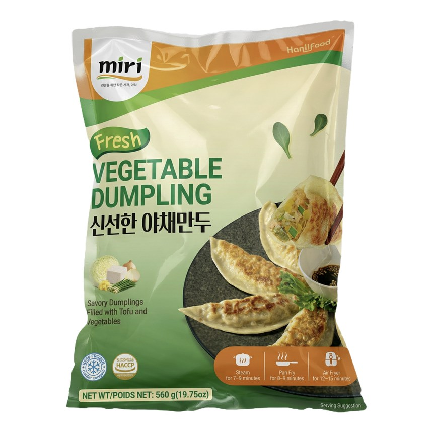
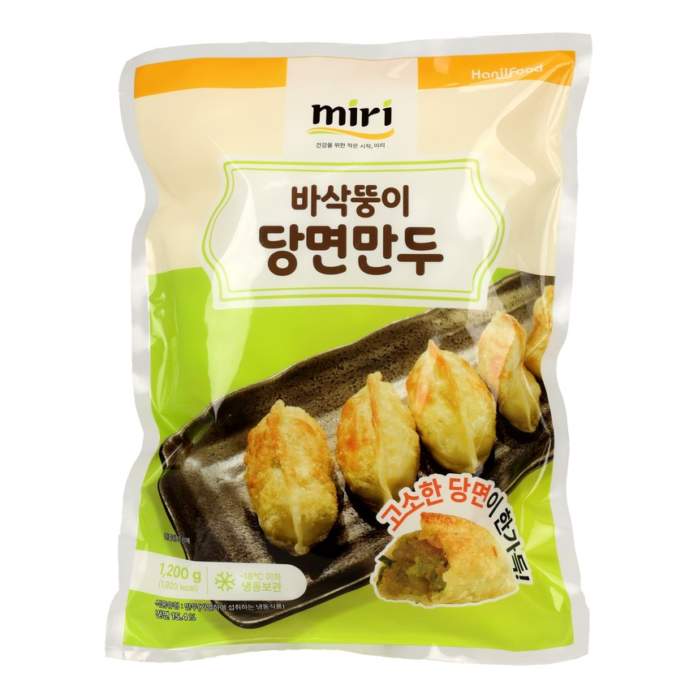
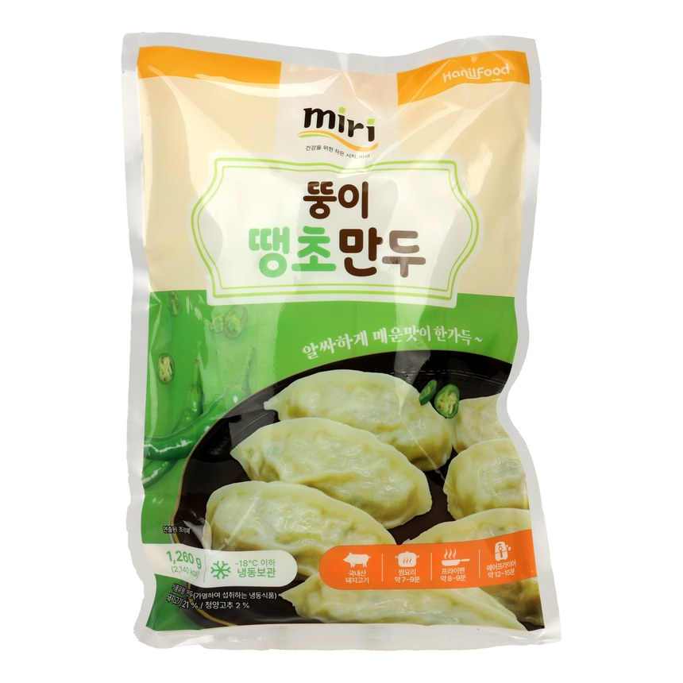
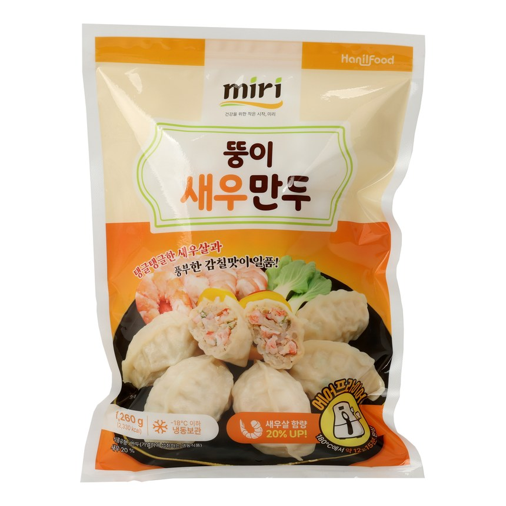
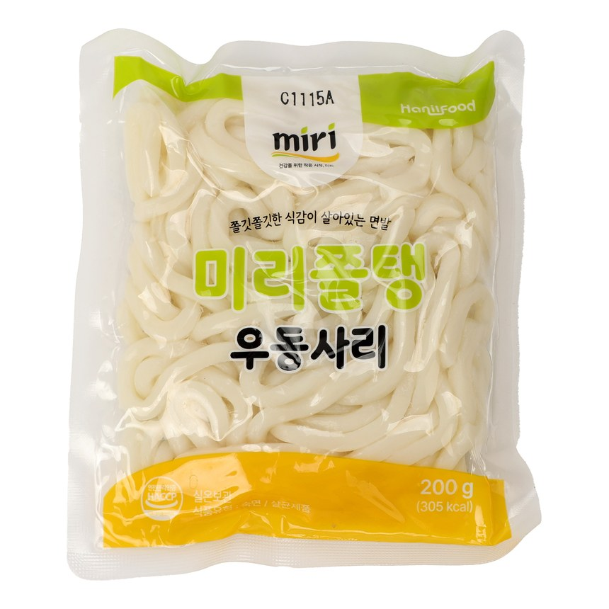
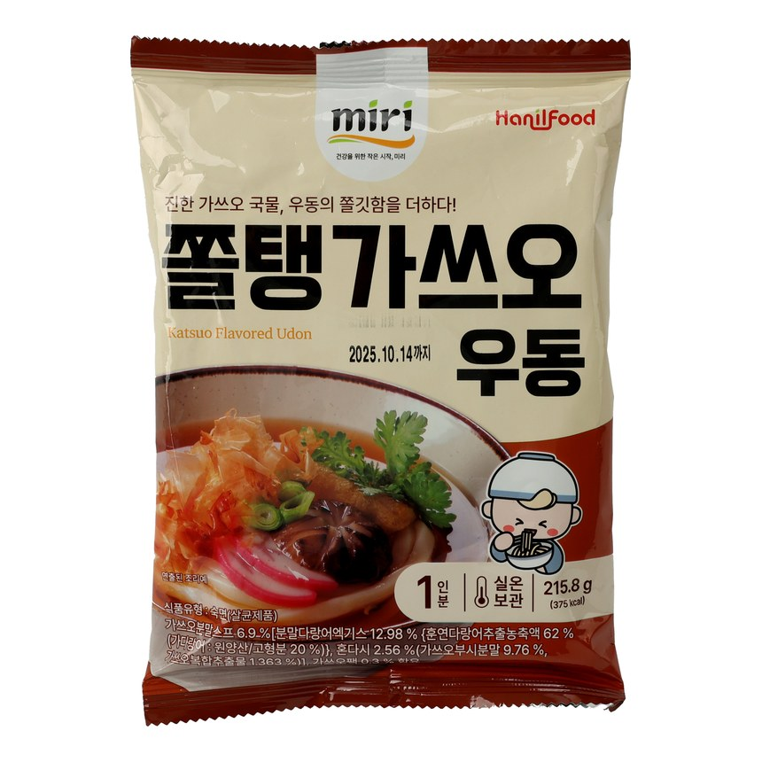
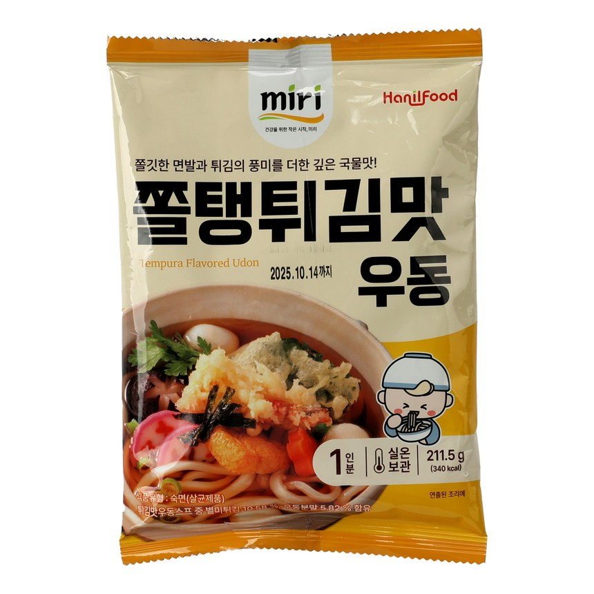
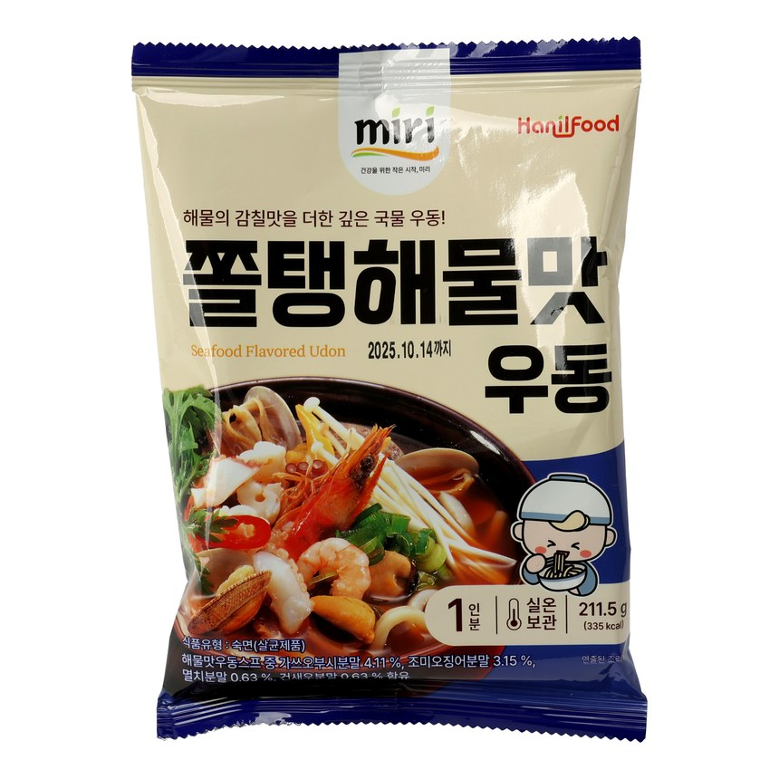

Korean mandu and udon — crispy, ready in minutes, and built for game day, parties, and everyday meals. Retail packs & B2B cartons, export-ready with private-label / OEM available.
Korean mandu — the dumplings American shoppers know as frozen potstickers. If your shoppers are already buying frozen wontons, frozen gyoza, dim sum dumplings or mini potstickers, mandu dumplings sit in the same basket — and shoppers who search korean dumplings frozen land here too. Every variety pan-fries crispy from frozen in minutes into savory dumplings with a genuinely crisp shell, which is what makes them some of the best frozen dumplings for weeknight dinners, party trays, and healthy game day snacks alike.







Every retail SKU is also supplied as a B2B carton (BOX) for wholesale & foodservice: Crispy Glass Noodle Mandu 1,200g · 600g · Pork Mandu 1,260g · 630g · Kimchi Mandu 1,260g · 630g · Spicy Chili Mandu 1,260g · 600g · Shrimp Mandu 1,260g · 630g · Flat Mandu 1,200g. Request case specs & pricing →







Every retail SKU is also supplied as a B2B carton (BOX) for wholesale & foodservice: Chewy Udon Noodle 200g · Springy Udon Noodle 200g · Chewy Udon Noodle 600g. Request case specs & pricing →
Every retail SKU is also supplied as a B2B carton (BOX) for wholesale & foodservice: Flat Glass-Noodle Mandu 1,200g · Crispy Glass Noodle Mandu 1,200g · Chewy Udon Noodle 200g · Springy Udon Noodle 200g. Request case specs & pricing →
Frozen mandu is one of the few appetizers that moves all year — which is what makes it easy to merchandise.
The biggest volume window. Shoppers hunting game day snacks football weekends, snacks for superbowl party in February, and appetizers for tailgate party or appetizers for football party menus all land on the same tray of crispy dumplings. Fry a full sheet in one batch — that's what makes them game day snacks easy enough to repeat every Sunday, and why game day party snacks displays turn fast.
From appetizers for fall party season through appetizers for holiday party trays and party appetizers for new years eve, dumplings plate straight from the fryer with no prep labor. Stock builds from October and clears by January.
Still the everyday driver: appetizers for dinner party menus, appetizers for cocktail party boards, and birthday party appetizers for a crowd. When shoppers search snacks for party ideas or quick appetizers for party planning, twelve minutes from freezer to platter is the whole pitch.
Bars, cafés and hotel banquets run the same SKU as crispy dumpling bites on a shared plate, and dim sum wholesale buyers take the flat and glass-noodle varieties as crispy gyoza dumplings or fried dumplings asian menu items. B2B cartons ship export-ready.
Every occasion above runs on the same case — MIRI potstickers, MIRI gyoza and Sol Food mandu ship in one carton spec. Request the merchandising deck →
Sol Food produces OEM mandu & udon for leading brands — retail pouches, B2B cartons, and single-serve or cup udon with soup. Let's develop yours.